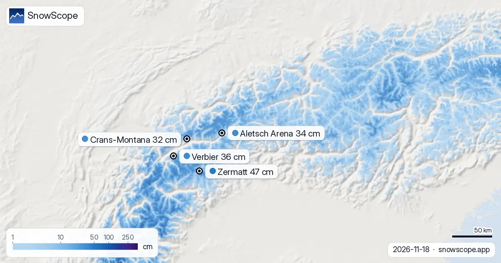

Wo liegt der beste Schnee in der Schweiz? Zermatt mit 47 cm oben (18. November)
Am 18. November haben alle 14 Schweizer Skigebiete, die von SnowScope beobachtet werden, Schnee in den Höhenlagen. Zermatt ist mit 47 cm am tiefsten, Verbier und Aletsch Arena folgen knapp dahinter. In den nächsten drei Tagen bringt erheblicher Neuschnee Besserung in die meisten Gebiete.
Die Live-Schneeprognose für Zermatt in der SnowScope-AppSchneehöhen, Pulverschnee-Alarme und 3D-Karte, gratis.
Die Schneekarte am 18. November
Die Hälfte der 14 Schweizer Skigebiete hat 28 cm oder mehr in den Höhenlagen; die andere Hälfte weniger. Die mittlere Schneehöhe im Land liegt bei 28 cm. An der Spitze steht Zermatt mit 47 cm, wo die höchste Bahn 3.872 m erreicht. Die Luft ist kalt genug, damit Schnee auf Felsen und dünnen Stellen liegen bleibt, ohne zu schmelzen.
Die zweite Gruppe umfasst Verbier (36 cm), Aletsch Arena (34 cm), Saas Fee (33 cm) und Crans-Montana (32 cm). Unter 30 cm haben Skigebiete wie Engelberg-Titlis (28 cm), Mürren/Schilthorn (28 cm) und Andermatt (26 cm) genug für sichere Abfahrten auf präparierten Pisten, aber auf steilem Gelände können Felsen zu Kantenhängern führen.
| Skigebiet | Schneehöhe | Neuschnee, 72 h | Erwartet, nächste Tage | Gipfel |
|---|---|---|---|---|
| Zermatt | 47 cm | 61 cm | 77 cm | 3.872 m |
| Verbier | 36 cm | 64 cm | 81 cm | 3.304 m |
| Aletsch Arena | 34 cm | 37 cm | 41 cm | 2.869 m |
| Saas Fee | 33 cm | 43 cm | 49 cm | 3.556 m |
| Crans-Montana | 32 cm | 53 cm | 68 cm | 2.872 m |
| Engelberg-Titlis | 28 cm | 30 cm | 45 cm | 3.040 m |

Was in den letzten drei Tagen fiel
Die drei Tage bis zum 18. November brachten die stärksten Schneefälle nach Verbier (64 cm), Zermatt (61 cm) und Crans-Montana (53 cm). Diese Zahlen zeigen, welche Hänge den meisten der jüngsten Stürme abbekommen haben. Verbiers Höhe – die Spitzenbahn liegt auf 3.304 m – bedeutet, dass es mehr Feuchte aufgefangen hat, als die Luft über den Walliser Alpen aufstieg und abkühlte.
Tiefergelegene Skigebiete wie Andermatt erhielten im selben Zeitraum nur 26 cm, ein Zeichen dafür, dass die stärksten Fälle in den höheren Bereichen im Süden und Osten blieben.
Was die Vorhersage bis 21. November zeigt
SnowScope prognostiziert, dass Verbier bis 21. November 81 cm hinzugewinnt, Zermatt 77 cm und Crans-Montana 68 cm. Das sind die größten Zuwächse im ganzen Land. Falls die Vorhersage eintrifft, erreicht Zermatt eine stabile Basis für Mitte November, und Verbier könnte es allein durch Neuschnee überholen.
Auch die tieferen Skigebiete profitieren. Andermatt soll bis 21. November 34 cm hinzubekommen, mehr als eine Verdopplung der aktuellen Tiefe. Diese Zahlen setzen voraus, dass sich die Wetterlage hält und die Stürme planmäßig eintreffen.
Kurztrip planen: das Argument für Zermatt
Wenn du zwei oder drei Tage Zeit zum Skifahren vor 21. November hast, bietet Zermatt jetzt die beste Kombination. Es hat den tiefsten Schnee (47 cm) und die höchsten Bahnen des Landes. Am Ende deines Aufenthalts sind 77 cm Neuschnee prognostiziert, sodass du in deutlich bessere Bedingungen fahren wirst.
Die Höhenlagen in Zermatt bleiben kalt und halten den Schnee gut, wegen der Höhe und des Gletschers. Verbringe deinen ersten Tag auf den hohen Pisten, um die Tiefe zu genießen, bevor die Nachmittagssonne die Oberfläche aufweicht; am zweiten Tag erfrischt der Neuschnee die unteren Pisten. Verbier ist auch eine hervorragende Wahl, wenn du dem frischesten Schnee nachgehen möchtest, da es in den letzten 72 Stunden bereits 64 cm Neupulver abbekommen hat.
Überlegungen zum Skitourengehen
Mit bis zu 64 cm Neuschnee in den Top-Skigebieten ist der Skitourenhang in den nächsten 24 bis 48 Stunden verlockend und angenehm. Aber die Basis unter dieser neuen Schicht ist immer noch dünn (47 cm im tiefsten Skigebiet). Felsen, Stöcke und Geländefallen liegen eng darunter, besonders an steilen Hängen und in Rinnen.
Bevor du die Pisten verlässt, schaue dir das örtliche Lawinenlagebericht für jedes Gebiet an. Bleibe in Terrain, das du gut kennst und das du schon in ähnlichen Bedingungen befahren hast. Früh morgens ist am sichersten: der Schnee verfestigt sich über Nacht, und die ersten Spuren sind am weichsten und verzeihendsten.
Anfahrt und Ausrüstung
Straßen zu den Hochgebieten können auf den Zufahrten vereist sein. Winterreifen oder Ketten sind für die letzten Kilometer zu Zermatt, Saas Fee und Verbier unerlässlich. Prüfe die lokalen Straßenverhältnisse vorher, besonders wenn du in der Früh oder am späten Nachmittag fährst, wenn die Temperaturen sinken.
Zieh dich in Schichten an: Die Lufttemperatur auf 3.872 m im November kann auf -10°C oder kälter fallen. Eine winddichte Jacke, thermische Unterschichten und ein guter Halswärmer machen den Unterschied zwischen einem komfortablen Tag und einem kalten aus. Sonnenschutzcreme und gute Sonnenbrillen sind auch vital, denn die hohe Schneeoberfläche reflektiert intensive UV-Strahlung.
Tipps für Skifahrer
- Starte vor 8 Uhr: Die ersten Abfahrten von den Pisten haben nach einer kalten Nacht und vor der Nachmittagssonne den weichsten Schnee.
- Zermatt und Verbier sind deine beste Wette für Tiefe und Frischpulver zusammen; wähle je nach Anfahrtszeit und Unterkunftskosten.
- Winterreifen oder Ketten sind Pflicht für die letzten Aufstiege zu Hochgebieten; prüfe die regionalen Straßenbulletins vor der Abfahrt.
- Skitourengehen nur nach Lesen des offiziellen Lawinenlageberichts für dein Gebiet und dein Skigebiet. Neuschnee auf dünner Basis bedeutet, Felsen und Geländefallen sind eng.
- Pack extra Schichten und Sonnenschutzcreme mit hohem Lichtschutzfaktor: Die Höhe und die Reflexion von Neuschnee intensivieren sowohl Kälte als auch UV-Belastung.
Zu diesen Zahlen
Die Schneehöhen der Skigebiete sind der meiste Schnee in den oberen Hängen am angegebenen Tag; es sind Schätzungen für eine Fläche, keine Messung an einem Punkt. Prognosen können sich ändern. Lies vor dem Freeriden immer den offiziellen Lawinenlagebericht.
Diesen Bericht zitieren
Für Forschung, Lehre oder Presse: Zahlen und Grafiken sind unter CC BY 4.0 mit dieser Quellenangabe frei nutzbar.
SnowScope (2026), Wo liegt der beste Schnee in der Schweiz? Zermatt mit 47 cm oben (18. November), https://snowscope.app/blog/de/2026/11/schneehoehen-schweiz-18-november-2026.html, abgerufen am 2026-11-18
SnowScope (Atlas Labs). (2026, November 18). Wo liegt der beste Schnee in der Schweiz? Zermatt mit 47 cm oben (18. November). SnowScope snow reports. https://snowscope.app/blog/de/2026/11/schneehoehen-schweiz-18-november-2026.html
BibTeX
@misc{snowscope2026schneehoehenschweiz18nov,
author = {{SnowScope (Atlas Labs)}},
title = {Wo liegt der beste Schnee in der Schweiz? Zermatt mit 47 cm oben (18. November)},
year = {2026},
month = nov,
howpublished = {\url{https://snowscope.app/blog/de/2026/11/schneehoehen-schweiz-18-november-2026.html}},
note = {Published 2026-11-18 12:04 UTC; accessed 2026-11-18}
}· CC BY 4.0 · Methoden, Daten und Werkzeuge →
Zermatt: Schnee und Temperatur nach Höhe, dieser Winter vs letzter (Werkzeuge) →
Zermatt folgen
Gratis: eine Nachricht, wenn Neuschnee kommt, und jeden Morgen die Vorhersage.